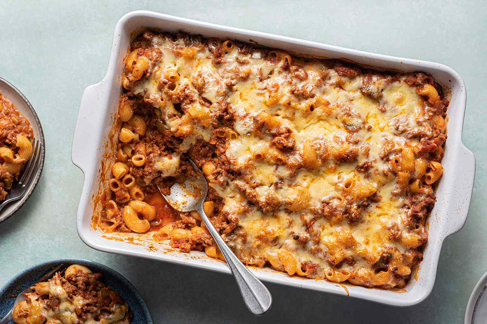

Grandma's secret casserole

Description
It's sunday! Oh the smell of tomatoes and melted cheese in the air.
Grandma worked all morning to prepare every ingredient just right. You
already know... you WILL go for seconds.
This recipes is for a rich main dish that will feed a family of 6. It is
fairly easy but you might want to start 4 hour before serving time.
Ingredients
- Mirepoix (carrot, celery, onion)
- Ground beef
- Tomato paste
- Pasta
- Grated cheese
- Secret ingredient n 1
Steps
- Sauté the mirepoix in olive oil
- Add the minced meat and fry until crispy
- Add the tomato
- Cook the pasta in boiling water until al dente
- In a casserole dish add and mix the sauce, and the pasta
- Add the secret ingredient n 1
- Cover with cheese and bake for 15/20 min
- Buon appetito!